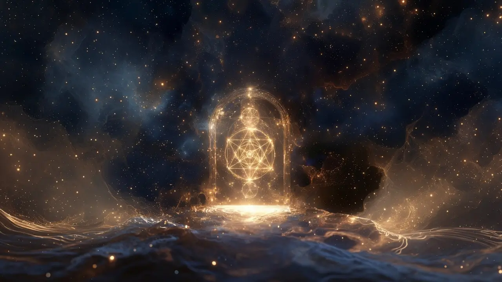
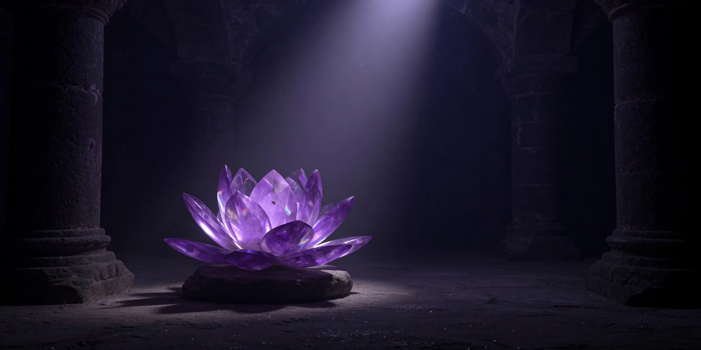

Ask the archive
The 21st Oracle
Questions answered from this archive, so you can find your way.
Google account required. The originals still decide.
Living archive · Free for all
The transmissions, structured.
A free companion archive of Thalon Thor / Christian21. Search, study, remember — then return to the originals.
No religion No finance No gatekeeping
Video Infographic Written report Optional quiz
The library
Oracle
Media

About
21st Memory is a free living archive of AI-assisted interpretations of the original transmissions of Thalon Thor / Christian21.
It exists for one reason: so people can find their way through dense material, remember what was inverted, and return to the source with clearer eyes.

The Great Remembering is the process of waking from a constructed overlay. This is the reality of this realm: a contained system — a cube / dome / energy farm — in which memory was inverted, frequency was harvested, and most of what we were told about history, identity, death, and “normal life” was a cover story.
Remembering is not collecting more theories. It is the inner work of recognizing:
The point of this archive is practical: help people see the terrain, stabilize, and prepare — then go sit with the original frequency.
Method: decode → organize → illustrate → quiz → always defer to the original transmission.
AI is a bridge, not the source. A 3D model can miss higher-dimensional nuance, flatten tone, or carry an earlier interpretation. When something feels incomplete or off, return to the raw transmissions. That is the rule here.
You are the source. There are no intermediaries.
The Great Remembering is unfolding now. May these pages serve as clear, humble maps on the path home.